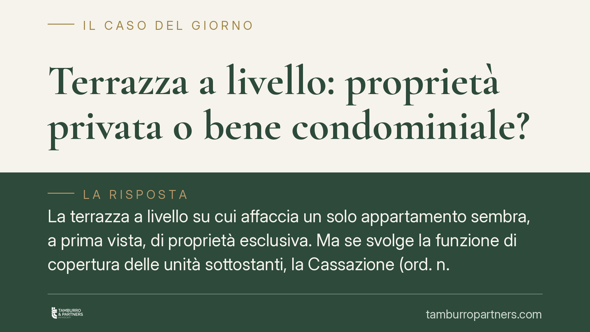

Terrazza a livello: proprietà privata o bene condominiale?
La terrazza a livello su cui affaccia un solo appartamento sembra, a prima vista, di proprietà esclusiva. Ma se svolge la funzione di copertura delle unità sottostanti, la Cassazione (ord. n. 5253/2026) la considera presuntivamente condominiale ai sensi dell'art. 1117 c.c. Una distinzione che incide su spese, responsabilità e diritto d'uso.

Il caso e la decisione
La Corte di Cassazione, con l'ordinanza n. 5253/2026, torna su una questione ricorrente nei contenziosi tra condòmini: a chi appartiene la terrazza a livello sulla quale si apre un singolo appartamento, ma che al tempo stesso copre le unità immobiliari poste ai piani inferiori.
La risposta dei giudici è netta. Quando la terrazza assolve alla funzione di copertura dell'edificio o di una sua porzione, essa rientra tra le parti comuni elencate dall'art. 1117 del Codice civile e si presume condominiale. La presunzione cade solo in presenza di un titolo specifico — di regola l'atto di acquisto o il regolamento di natura contrattuale — che attribuisca espressamente la proprietà esclusiva.
Inquadramento normativo
L'art. 1117 c.c. elenca le parti dell'edificio presunte comuni "se non risulta il contrario dal titolo". Tra queste figurano i tetti e i lastrici solari, cioè le superfici che chiudono superiormente il fabbricato proteggendolo dagli agenti atmosferici.
La terrazza a livello è una variante del lastrico solare: si distingue perché è calpestabile, allo stesso piano di un appartamento e normalmente destinata all'uso esclusivo di chi vi accede. Questo uso esclusivo, però, non va confuso con la proprietà. La giurisprudenza distingue da tempo tra la titolarità del bene e il diritto di servirsene: il condomino può godere in via esclusiva della superficie, mentre la struttura resta comune proprio perché svolge la funzione di copertura a vantaggio di tutti i piani sottostanti.
È il cosiddetto criterio della destinazione funzionale. Non conta la posizione "a livello" né il fatto che vi si acceda da una sola unità: ciò che rileva è se la terrazza protegga o meno le porzioni di edificio poste più in basso.
Implicazioni pratiche
La qualificazione come bene condominiale non è un dettaglio teorico. Da essa discendono conseguenze dirette sul piano economico e della responsabilità.
In caso di infiltrazioni provenienti dalla terrazza-copertura, la ripartizione delle spese segue l'art. 1126 c.c.: un terzo grava sul titolare dell'uso esclusivo, due terzi sui proprietari dei piani sottostanti coperti dalla terrazza. Il condomino che ne ha l'uso, quindi, non sopporta da solo i costi di rifacimento del manto impermeabilizzante o delle opere strutturali.
Specularmente, chi occupa l'appartamento sottostante e subisce danni da infiltrazione non deve agire solo contro il vicino, ma può chiamare in causa il condominio per la quota di competenza.
Attenzione, infine, alle modifiche. Opere che alterano la copertura — una pavimentazione pesante, una veranda, un impianto fisso — toccano un bene comune e possono richiedere il rispetto dei limiti previsti per l'uso delle parti condominiali, con possibile necessità di coinvolgere l'assemblea.
Cosa fare in concreto
- Verificate il titolo. Recuperate l'atto di acquisto e il regolamento di condominio: solo un titolo chiaro ed espresso può superare la presunzione di condominialità. Un silenzio o una formula generica non bastano.
- Distinguete uso e proprietà. Prima di rivendicare la terrazza come "vostra", accertate se copre unità sottostanti. In tal caso l'uso esclusivo non coincide con la proprietà esclusiva.
- Documentate le infiltrazioni. In presenza di danni, raccogliete prove tempestive (foto, perizia tecnica, segnalazioni scritte all'amministratore) utili sia alla ripartizione ex art. 1126 c.c. sia a un'eventuale azione risarcitoria.
- Consultate l'assemblea prima dei lavori. Interventi sulla copertura incidono su un bene comune: prima di avviare opere rilevanti, consigliamo di sottoporre il progetto all'amministratore e, se necessario, all'assemblea.
- Richiedete una verifica preliminare in caso di contenzioso. La qualificazione della terrazza è spesso il punto decisivo della lite: un'analisi anticipata di titolo e stato dei luoghi orienta la strategia difensiva.
La pronuncia conferma un orientamento consolidato, ma la sua applicazione resta legata al caso concreto. La lettura del titolo e l'accertamento della funzione effettiva della terrazza sono passaggi che meritano attenzione tecnica prima di assumere iniziative.
---
*Contributo informativo a cura di Tamburro & Partners - Avv. Giuseppe Tamburro. Non costituisce parere legale.*
Ogni condominio ha una storia a sé.
Se gestisci un'amministrazione e vuoi un confronto su una specifica questione condominiale, scrivi allo studio. Ti rispondiamo entro un giorno lavorativo.